Petrografia e mineralogia
Caratterizzazione mineralogica e microstrutturale di rocce e materiali mediante microscopia ottica e tecniche analitiche.
GEOLOGY / PETROGRAPHY / CULTURAL HERITAGE
Ricerca scientifica in geologia, petrografia, mineralogia e archeometria. Dalla caratterizzazione dei geomateriali allo studio delle pietre storiche e del patrimonio lapideo.
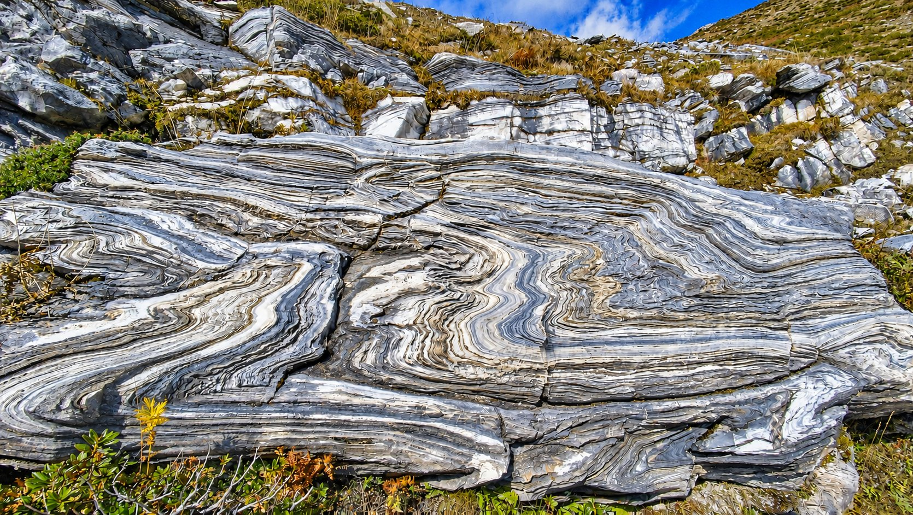
01 / PROFILO ACCADEMICO
Sono un geologo con dottorato di ricerca (Ph.D.) in Scienze della Terra e del Mare. La mia attività scientifica si concentra sulla caratterizzazione mineralogico-petrografica dei materiali naturali e antropici, con particolare attenzione alle rocce carbonatiche e ai geomateriali.
Integro osservazioni sul terreno e al microscopio con metodi analitici quali diffrattometria a raggi X, fluorescenza X e microscopia elettronica, per studiare composizione, microstruttura, provenienza e trasformazioni dei materiali.
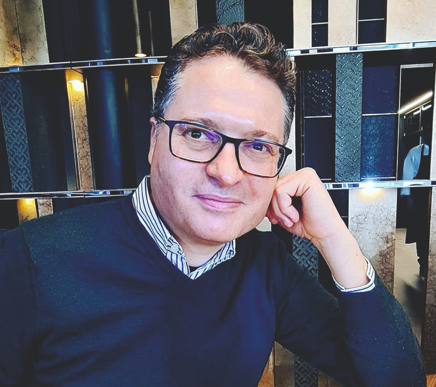
02 / AREE DI RICERCA
Caratterizzazione mineralogica e microstrutturale di rocce e materiali mediante microscopia ottica e tecniche analitiche.
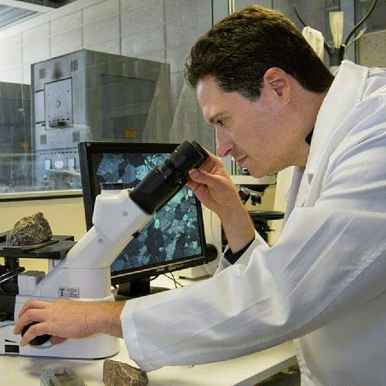
Studio delle proprietà e delle trasformazioni di calcari, dolomie, calci e leganti minerali.
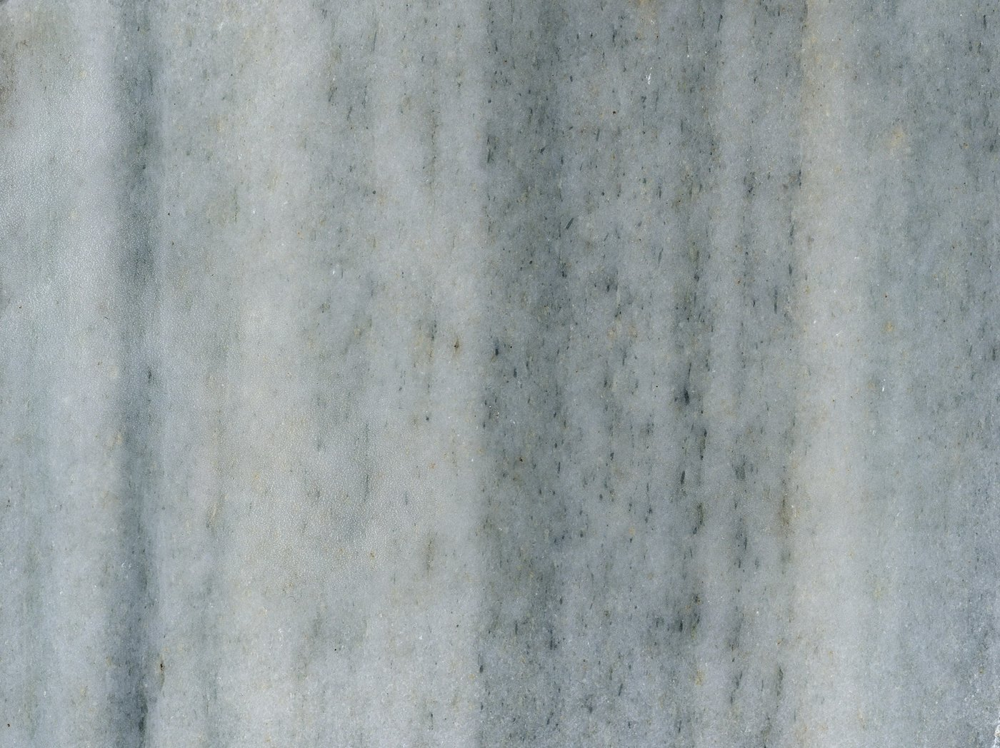
Identificazione e studio di pietre storiche, cave, materiali da costruzione e patrimonio lapideo.
METODOLOGIE SCIENTIFICHE
Petrografia, diffrattometria, analisi chimiche e tecniche microstrutturali: un approccio integrato allo studio di rocce, carbonati, calci e materiali del patrimonio storico.
Esplora metodologie e competenze ↗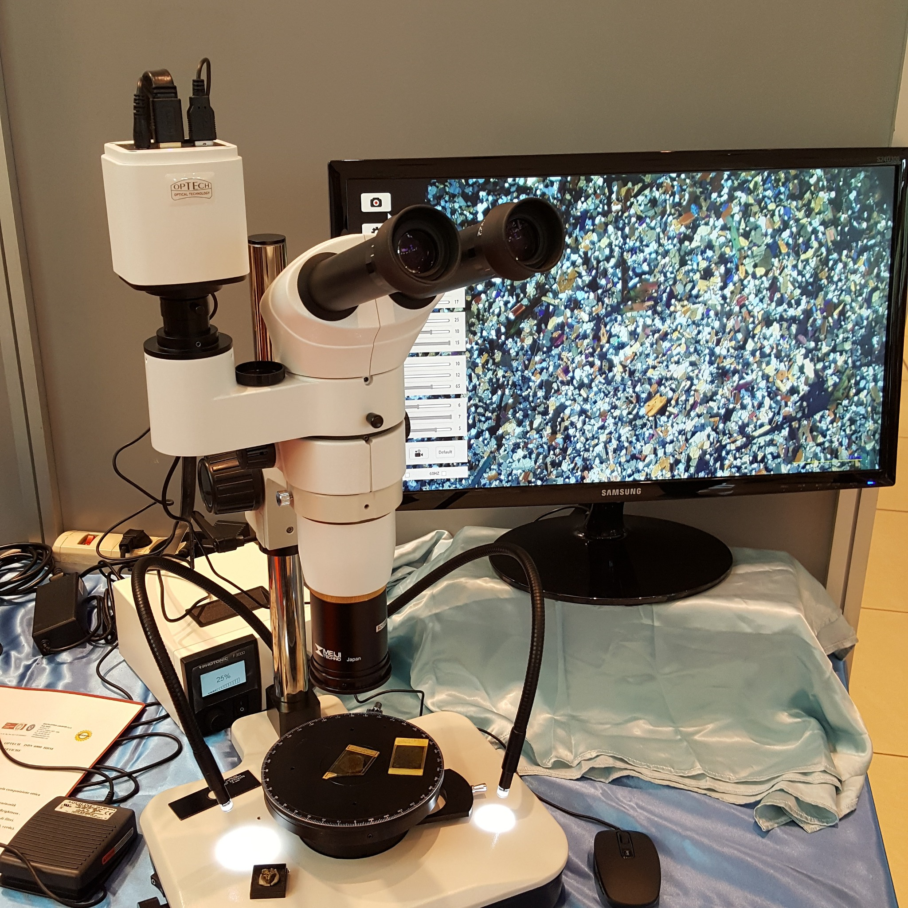
PATRIMONIO GEOLOGICO DELLA BERGAMASCA
Dal costruito storico di Bergamo Città Alta all’Arabescato Orobico, dal Marmo di Zandobbio alla Pietra di Sarnico e alle colonne del Santuario di Lovere: cinque percorsi attraverso geologia, proprietà dei materiali e storia dell’architettura.
Esplora le cinque schede →03 / PROGETTI DI RICERCA
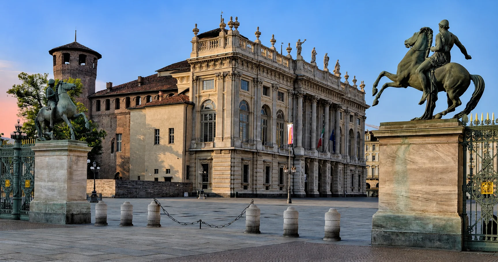
Geologia, cave storiche e caratterizzazione archeometrica dei marmi.
Approfondisci →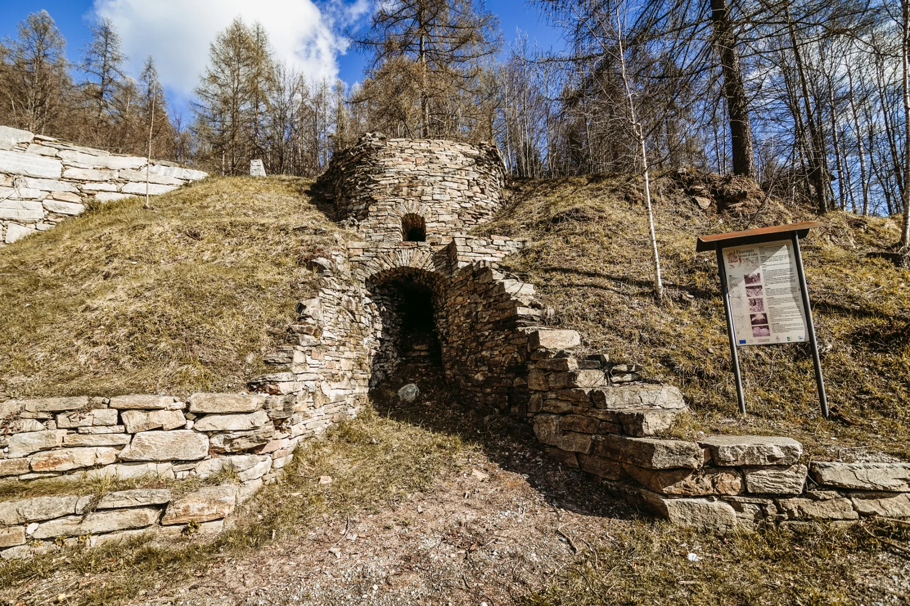
Materie prime e tecnologie storiche di produzione della calce.
Approfondisci →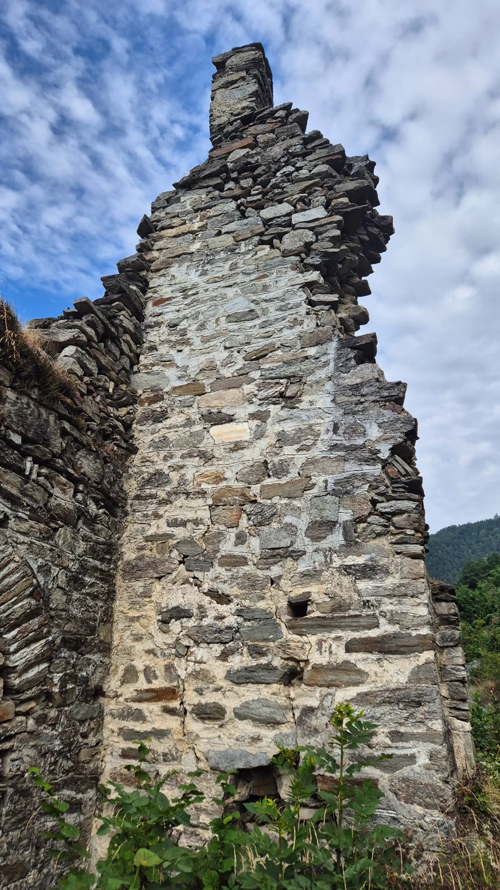
Studio archeometrico dei leganti storici della Val Germanasca.
Approfondisci →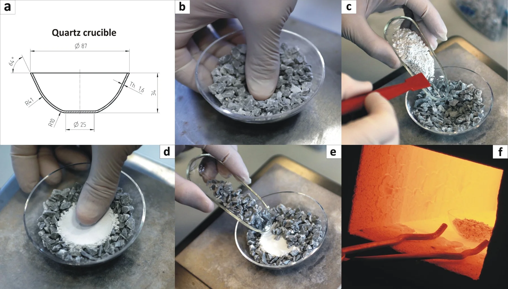
Fenomeni di agglomerazione e prove di stracottura OBT.
Approfondisci →LE PIETRE DELLE VALLI VALDESI
Una collana dedicata alle risorse lapidee delle Alpi Cozie: geologia, storia estrattiva, materiali e patrimonio architettonico. Il primo volume sulla Pietra di Luserna è pubblicato; il secondo, dedicato ai marmi, è in preparazione.
Esplora le Pietre delle Valli valdesi →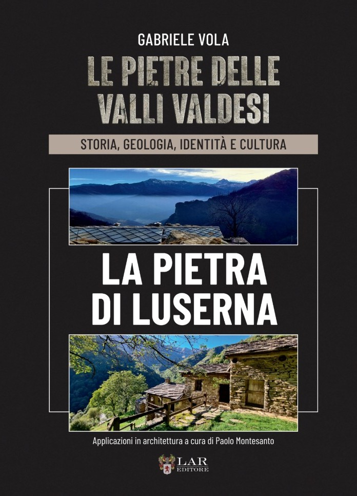
LIBRO / 2025
Gabriele Vola (2025). Le Pietre delle Valli valdesi. La Pietra di Luserna. LAReditore, Perosa Argentina, 330 pagine.
Un volume dedicato alla Pietra di Luserna, nel contesto degli studi sulle risorse lapidee e sul patrimonio geologico delle Valli valdesi.
Vedi il riferimento bibliografico ↗Recensioni e segnalazioni del volume ↓IL VOLUME NELLA STAMPA E NELLA COMUNITÀ
Una selezione di articoli e testimonianze dedicati al volume Le Pietre delle Valli valdesi. La Pietra di Luserna (2025). Sono riportati separatamente recensioni giornalistiche, segnalazioni editoriali e apprezzamenti pubblicati sui social.
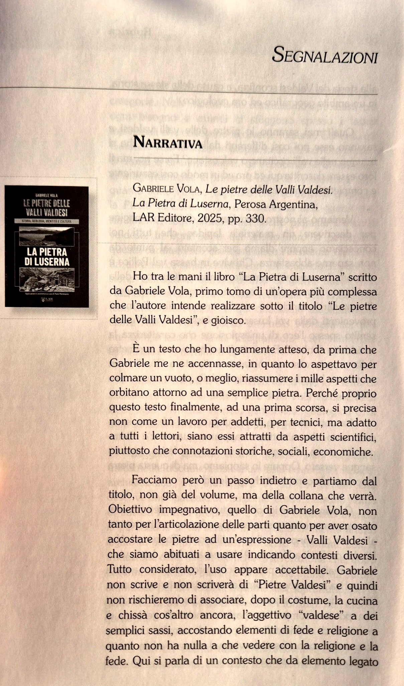
RECENSIONE · FEBBRAIO 2026
Tullio Parise, presidente di Sën Gian ATS, in La Beidana, n. 115, pp. 55–58. La recensione valorizza l'approccio interdisciplinare del libro, che intreccia geologia, storia estrattiva, architettura, lavoro e sostenibilità ambientale.
Consulta le quattro pagine ↗ · PDF integrale ↗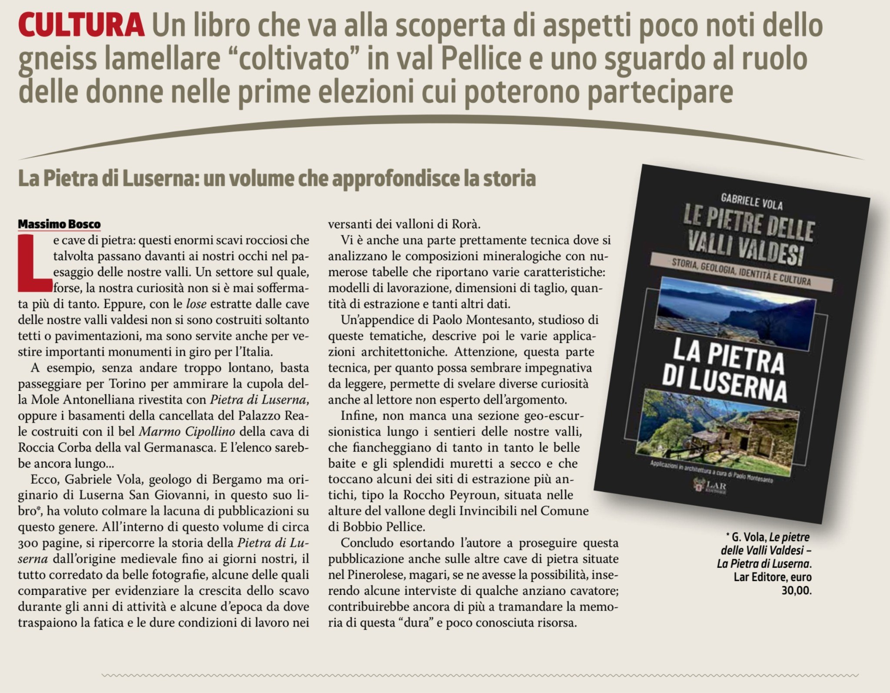
RECENSIONE GIORNALISTICA
Massimo Bosco — articolo di stampa. La recensione richiama il legame tra attività estrattiva, paesaggio, costruzioni e memoria del territorio.
Leggi la recensione integrale ↗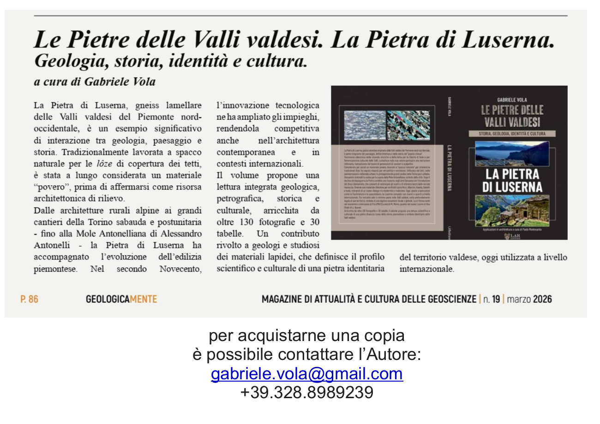
SEGNALAZIONE EDITORIALE · MARZO 2026
La rivista dedica al volume una presentazione che ne evidenzia il carattere interdisciplinare, tra geologia, petrografia, storia e cultura delle Valli valdesi (p. 86).
Apri la pagina in PDF ↗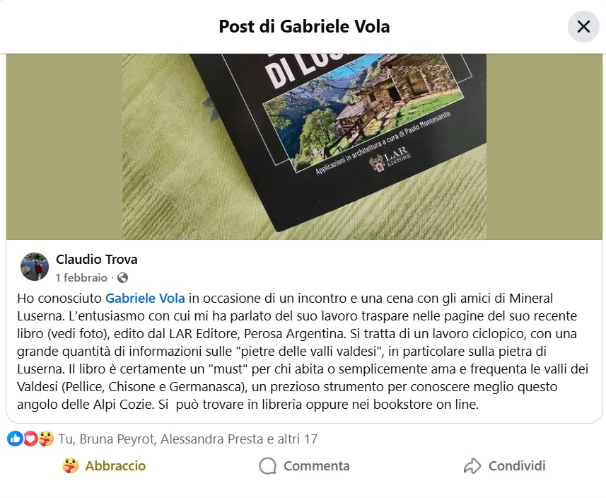
SEGNALAZIONE SUI SOCIAL · 1 FEBBRAIO 2026
Claudio Trova segnala il libro come strumento per conoscere meglio la Pietra di Luserna e le Valli valdesi, evidenziandone la ricchezza documentaria.
Leggi la segnalazione ↗La Beidana, n. 115 (febbraio 2026), pp. 55–58. Seleziona una pagina per leggerla alle dimensioni originali.
Fonte: La Beidana. Cultura e storia nelle valli valdesi, n. 115, febbraio 2026. Apri o scarica la recensione integrale (PDF) ↗
ATTIVITÀ SCIENTIFICA
Convegni, seminari, conferenze, presentazioni editoriali ed escursioni. Un calendario navigabile per seguire gli appuntamenti e consultarne l’archivio.
Consulta il calendario →04 / PUBBLICAZIONI
Una selezione di contributi in petrografia, archeometria, mineralogia applicata e scienza dei geomateriali.
2022 · Archeometria
2013 · Calcestruzzi romani
2023 · Carbonati e calce
2024 · Petrologia e geomateriali
2026 · Materiali funzionali
2014 · Pietre ornamentali
Bibliografia di 90 contributi aggiornata con la pubblicazione dell’articolo su Powder Technology (2026).
COLLABORAZIONI SCIENTIFICHE
Collaborazioni scientifiche con ricercatori di università italiane e internazionali, nell'ambito delle geoscienze e della caratterizzazione dei materiali.
Università degli Studi di Padova
Mineralogia e cristallografia delle calci aeree; fenomeni di adesione e agglomerazione ad alta temperatura (sticking tendency), reattività e idratazione della calce; trattamento dei gas di combustione e proprietà adsorbenti dei materiali mesoporosi; archeometria e provenienza dei marmi alpini.
Profilo istituzionale ↗Università degli Studi di Firenze
Geochimica ed elementi in traccia; indicatori geochimici (proxy) della sticking tendency; provenienza e archeometria dei marmi alpini; carbonio organico totale (TOC) ed elementi in traccia.
Profilo istituzionale ↗Università degli Studi di Ferrara
Spettroscopia di risonanza paramagnetica elettronica (EPR); studi di provenienza di materiali industriali e del patrimonio culturale.
Profilo istituzionale ↗Università degli Studi di Ferrara
Isotopi stabili di carbonio e ossigeno (C–O) e isotopi dello stronzio (Sr); catodoluminescenza; micropaleontologia e petrografia delle rocce carbonatiche.
Profilo istituzionale ↗Università degli Studi di Torino
Catodoluminescenza; caratterizzazione dei marmi di Rorà; stratigrafia.
Profilo istituzionale ↗Ricerca con partner internazionali sui materiali geologici e sui leganti minerali antichi.
University of Utah · Stati Uniti
Progetto ROMACONS; fasi C–S–H; malte e calcestruzzi antichi; tecnologie della calce, pozzolane e materiali cementizi.
Profilo ResearchGate ↗Collaborazioni interdisciplinari nel campo della storia dell’architettura, dell’archeologia, dell’ingegneria e dei materiali lapidei.
Architetto
Architetto laureato presso la I Facoltà di Architettura del Politecnico di Torino, con una tesi dedicata a Leonardo Ricci. Vive in Germania, dove conduce studi di storia e tipologia dell’architettura. Ha curato il contributo sulle applicazioni architettoniche della Pietra di Luserna nel primo volume della collana.
Architetto
Architetto formatosi al Politecnico di Torino, studioso di storia dell’architettura moderna e dei materiali lapidei. Autore di una ricerca su Lodovico Bò e beneficiario di una borsa di ricerca dottorale sui marmi bianchi piemontesi impiegati nella Torino di fine Settecento. Ha pubblicato studi sul patrimonio architettonico, fra cui una voce per il Dizionario Biografico degli Italiani (2019); collabora inoltre con istituzioni culturali internazionali.
Attività di ricerca ↗Profilo LinkedIn ↗Geologo · studi sui materiali lapidei
Geologo specializzato nello studio dei materiali lapidei. Collaborazioni scientifiche sulla Pietra di Luserna e sulle pietre ornamentali della Bergamasca; i risultati di queste ultime ricerche sono stati pubblicati sia in italiano sia in inglese.
Profilo LinkedIn ↗StoneDoctor · Profilo ↗Archeologo
Studio archeologico delle malte storiche medievali della chiesa di San Martino in Val Germanasca, nell’ambito di una collaborazione interdisciplinare sulle tecniche costruttive e sui materiali.
Profilo Academia.edu ↗Ingegnere
Collaborazione sui marmi della Val Germanasca: censimento delle antiche cave, campionamento sistematico dei marmi ornamentali e delle pietre destinate alla produzione della calce, ricerca delle tracce di impiego dei materiali carbonatici nel costruito storico, con particolare attenzione alle murature e agli intonaci delle baite.
Profilo LinkedIn ↗Sito Pralymania ↗05 / CONTATTI SCIENTIFICI
Per collaborazioni accademiche, scambio di dati e iniziative scientifiche.
gabriele.vola@gmail.com ↗Bergamo · Italia